GraphXR 2.16.0 Release Notes Release Date: July 24, 2023 The GraphXR 2.16.0 release includes new features and user interface design, and updates to general and enterprise extensions. In GraphXR, click About at the bottom left of the project space, then click on the current release tag to display a digest of features introduced in current and past releases. New Features 2.16.0 Right-click Menu. The right-click menu is re-designed to provide easier access to often-used toolbar and layout functionality. Its elements can also be customized. 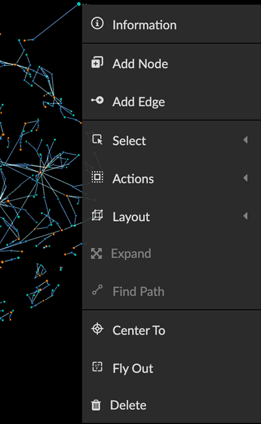 Default right-click menu items are: Information Add Node Add Edge Select, Actions, and Layout submenus: 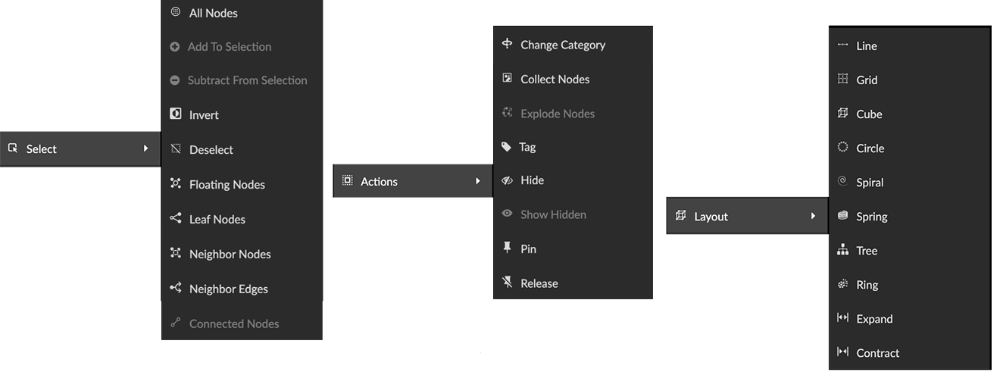 Select: All Nodes, Add to Selection, Subtract from Selection, Invert, Deselect, select Floating Nodes (those with no connected edges), Leaf Nodes (those with only one connected edge), Neighbor Nodes or Neighbor Edges (for selected nodes), and Connected Nodes (for selected edges). Actions: The new Change Category function, Collect Nodes or Explode Nodes in collections, Tag, Hide or Show Hidden, Pin, and Release. Layout: the same Quick Layout menu available on the bottom toolbar. In 2D mode, the 3D layouts (Cube and Spring) are grayed out and unavailable. Expand Find Path. A new function that traces a path between two selected nodes, similar to Trace Path in the Algorithm panel, except that the algorithm panel includes a Spotlight / Un -spotlight Path toggle. 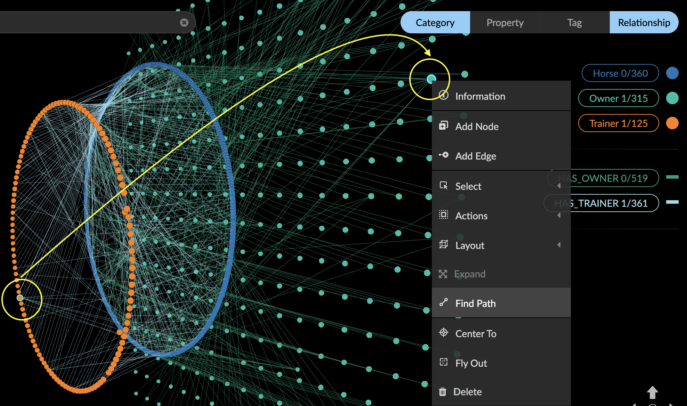 From the right-click menu, you can isolate the path using Select> Invert to select data not on the path, then Actions>Hide to hide those data. 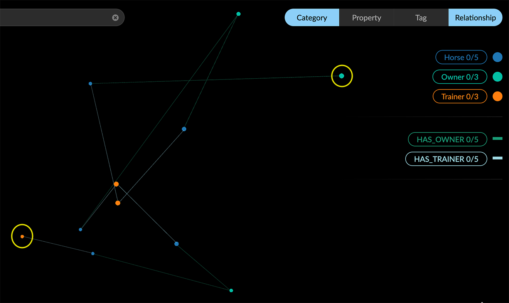 Center To Fly Out Delete Change Category. From the right-click Actions>Change Category menu, nodes can be assigned to a new or existing category. All the properties of the selected nodes will be transferred to the selected category. An existing category would therefore include both the existing and newly added properties. 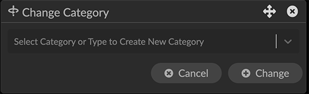 Change Category cannot be undone using Ctrl-Z. Before using Change Category, take a snapshot, save a data view, or save a GXRF file to enable quick recovery from a mistaken change. Display and Selection in the Legend. Category, Relationship, and Property lists can be hidden by clicking the tab on the Legend. 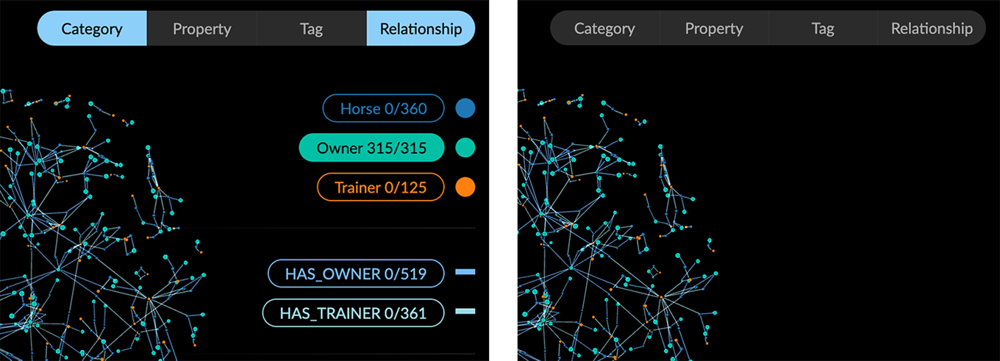 Ctrl-click to select more than one Category, Relationship, Property, or Tag from the list. 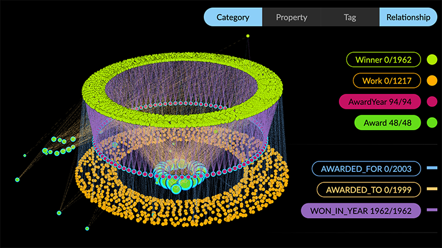 Styling dialogs now include additional Avatar, Size, and Caption tabs for categories, Bind Width and Caption tabs for relationships, and a color and icon picker for individual properties and tags. It is no longer necessary to open the Settings panel to access these controls. 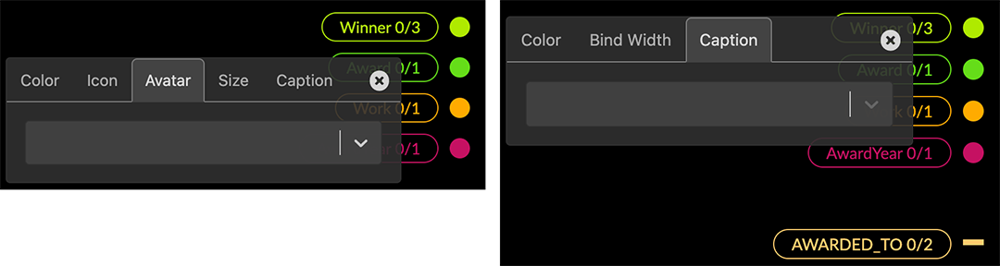 Filter Enhancements. Filter categorical (text string) property values. Node or edge property values which are text strings (as opposed to numerical, date or lat-long values) can now be filtered. A categorical filter displays a list of the unique string values found in the selected property. Selection checkboxes are provided, as well as a Match function to filter data using a search string or regular expression. Filter continuous (numerical) values as categorical ones. For numerical property values, a Continuous / Categorical toggle lets you filter numerical values as text strings. This can be useful for filtering properties with integer numerical values. 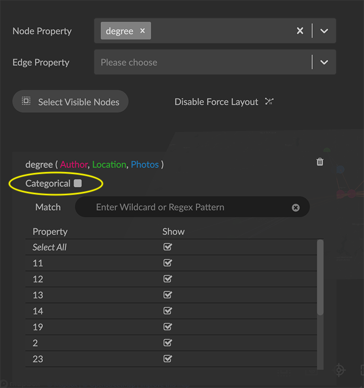 Select Categories or Relationships to be filtered. When a property name is used in more than one category (or relationship) the filter displays an active list you can use to select the labels to be filtered. 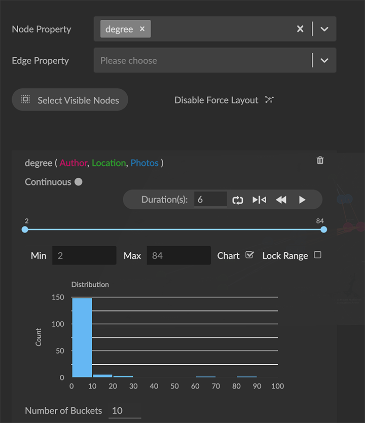 Chart. For continuous filters (numerical, date, latitude, or longitude property values), a live histogram (bar chart) of the data being filtered is displayed by default. The Chart checkbox lets you hide or show the histogram, and a Number of Buckets selector is provided to set the maximum number of bars in the chart. Named and parameterized Cypher queries. In the Query>Cypher panel, users can create named Cypher queries that include a descriptive name and optional input parameters. Once stored to the project, queries are available in shared projects and data views. This enables the creation of a set of standard queries that can be used by any of the project’s users. The + button to add a Cypher query to the collection of stored queries opens an Alias Name dialog asking you to enter and confirm a name when storing the query. 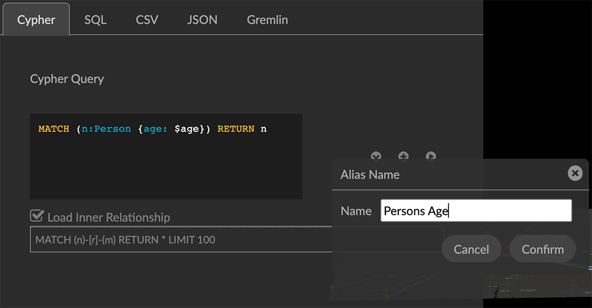 Stored queries are listed in the Query panel. As soon as they are stored on the project, other project users on other machines can access and run them. A query can be parameterized by using the special syntax $param in the query definition. For example: MATCH (n:Person {age: $age}) RETURN n See Parameters - Cypher Manual for details. Running a query that includes parameters displays a dialog asking the user to enter appropriate values for the parameters. Optionally, a shared view on the project can run a query by specifying the name of the query and key value pairs for the parameters. 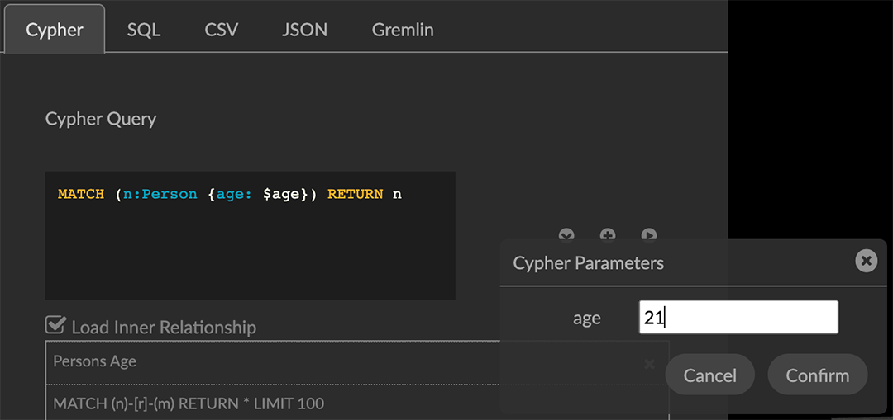 Map Enhancements. Map configuration details persist (including map boundaries set using Map Control) and are saved in data views, snapshots, and .GXRF export files. Navigation, Selection, and Visibility Enhancements. Properties of a Category or Relationship, which by default are displayed in alphabetical order, can be re-ordered in the Project panel by clicking arrow icons that appear on rollover at the left edge of the property list. 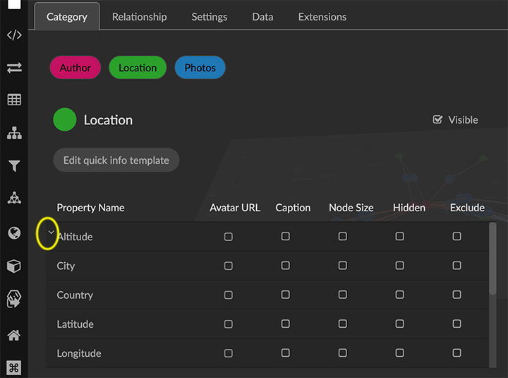 The new order is immediately updated in information windows. 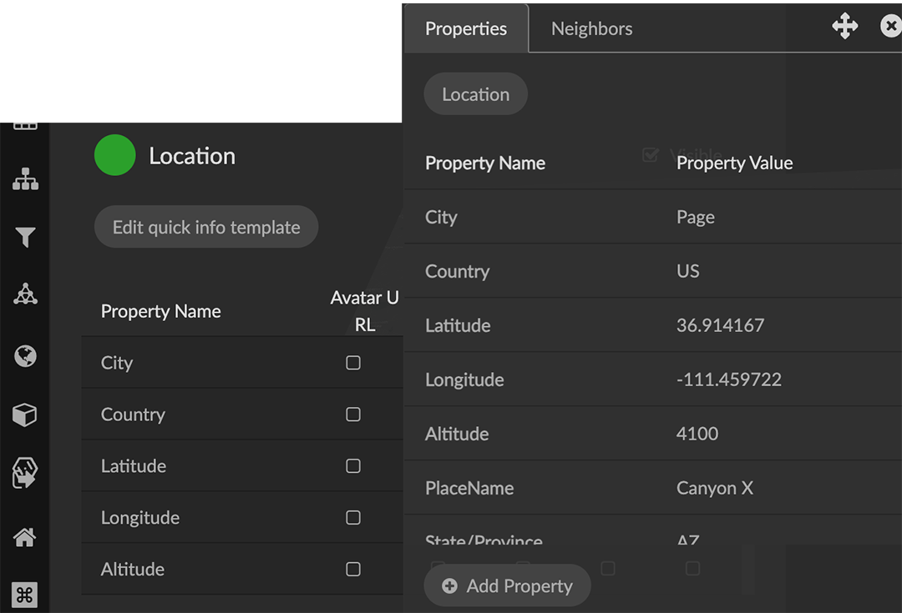 The Settings panel now includes an Auto Caption checkbox, which is selected by default. Double click a node or edge to display its information panel. Deleting a node closes its Information window. Edges can be selected more easily. Additional shortcut keys Orbit around x, y, or z axes: x: ctrl+alt+shift+o (Mac); ctrl+alt+shift+o (Windows) y: ctrl+o (Mac); shift+o (Windows) z: ctrl+shift+o (Mac); alt+shift+o (Windows) Select all orphaned nodes: shift+D Improved Security and User Access. Data views include optional password protection. 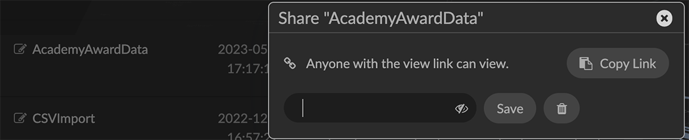 Performance. Extract works for more than 50,000 nodes. Faster response for Quick Information rollovers. Improved CSV parser. Project Configuration Admin user is created on startup. Creating Projects is streamlined. Removed 2.16.0 None Extensions 2.16.0 Visual Query Builder. Build Cypher queries using no-code building blocks. UI improvements. Grove (beta-release). Observable-inspired in-app javascript notebook. Continuing UI and API development For Enterprise subscriptions, limited release extensions are available for connecting to specific external data sources, or for importing data from RDBMS, document, or mixed data sources. Supported Environments 2.16.0 WINDOWS, MAC OSX, AND LINUX CLOUD, PRIVATE CLOUD, AND ON-PREMISES DATA HOSTING OCULUS RIFT, HTC VIVE, AND WINDOWS MIXED REALITY The GraphXR client runs best in Google Chrome; works in Safari. Compatibility with other browsers may vary. The GraphXR client includes beta support for Virtual Reality (VR) hardware in the Google Chrome browser via WebXR. GraphXR Cloud supports local and cloud storage. In addition, GraphXR Enterprise is available via on-premises or private cloud deployments. For more information, please contact Kineviz.